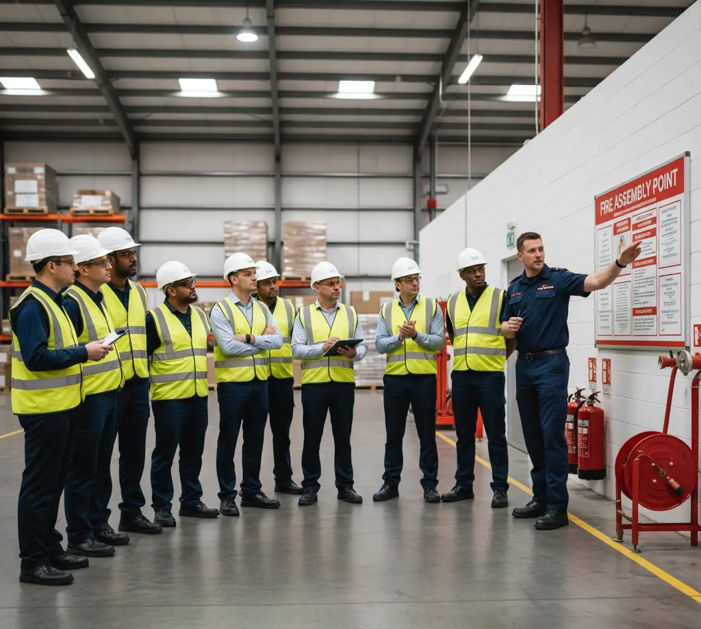
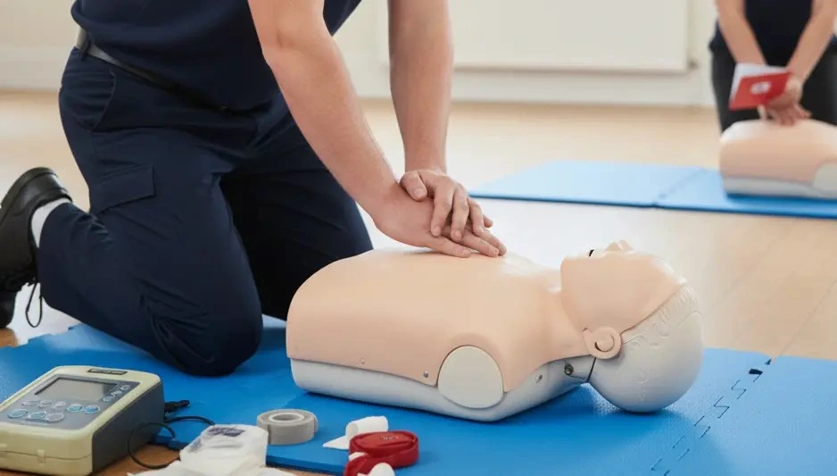
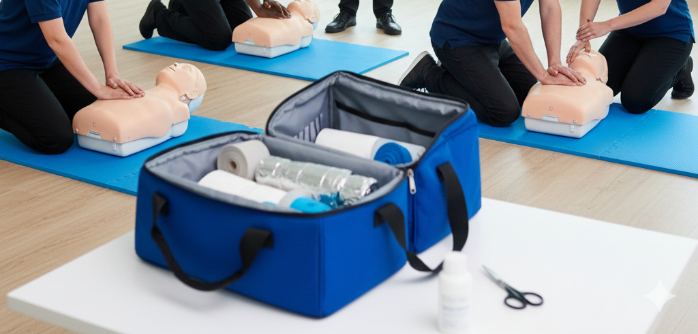

Training Courses in South West & Wales
Professional workplace training delivered across Bristol, Cardiff, Plymouth and the South West
View All Courses Call Us: 0800 XXX XXXXExpert Training Across the South West & Wales
Accomplished Training Solutions is proud to deliver professional workplace training courses throughout the South West of England and Wales. We provide on-site training at your workplace premises across Bristol, Cardiff, Plymouth, Exeter, Bath, Swansea, Newport, and throughout the region.
Our experienced trainers travel to businesses, schools, care homes, restaurants, offices, and organisations across the South West and Wales, delivering HSE compliant first aid training, fire safety courses, food hygiene qualifications, and health & safety training. All certificates are issued on the same day, ensuring immediate compliance with UK workplace legislation.
Training Courses in Bristol & Bath
We deliver comprehensive workplace training across Bristol, Bath, and the surrounding areas. From Bristol's vibrant business districts to Bath's historic center, our trainers provide flexible, on-site training solutions.
Bristol & Bath Locations We Cover
Bristol & Surrounds
- Bristol City Centre
- Filton
- Bradley Stoke
- Kingswood
- Warmley
- Yate
- Thornbury
- Portishead
- Clevedon
- Chipping Sodbury
Bath & North East Somerset
- Bath
- Keynsham
- Nailsea
- Weston-super-Mare
- Midsomer Norton
- Radstock
From aerospace and engineering businesses in Filton to tourism and hospitality in Bath, retail in Bristol city centre, and care homes across the region, we deliver industry-specific training solutions. Health & safety training and first aid qualifications are particularly popular across the Bristol area.
Book Bristol Training
Training Courses in Wales
Wales businesses benefit from our comprehensive workplace training services. We cover the entire country including South Wales, West Wales, Mid Wales, and North Wales.
Wales Cities & Towns We Serve
South Wales
- Cardiff
- Newport
- Barry
- Cwmbran
- Caerphilly
- Pontypridd
- Merthyr Tydfil
- Rhondda
- Bridgend
West Wales
- Swansea
- Neath
- Port Talbot
- Llanelli
- Carmarthen
North Wales
- Wrexham
- Bangor
Our trainers serve businesses across Wales' diverse economy, from Cardiff's financial and professional services to Swansea's manufacturing, tourism throughout West Wales, and public sector organisations across the country. Fire safety training and food hygiene courses are in high demand throughout Wales.
Book Wales Training
Training Courses in Devon & Cornwall
We provide workplace training across Devon and Cornwall. Our trainers deliver accredited courses throughout these counties, serving the South West's tourism, maritime, and rural business communities.
Devon & Cornwall Locations We Cover
Devon
- Plymouth
- Exeter
- Torquay
- Paignton
- Torbay
- Barnstaple
- Newton Abbot
- Exmouth
- Teignmouth
Cornwall
- Truro
- Falmouth
- Penzance
- Newquay
- St Austell
- Bodmin
- Redruth
From hospitality businesses in popular tourist destinations to maritime industries in Plymouth and Falmouth, agricultural businesses across rural areas, and healthcare facilities throughout Devon and Cornwall. Food safety training and manual handling are particularly popular across the tourism and hospitality sector here. See what our clients say.
Book Devon TrainingTraining Courses in Gloucestershire & Wiltshire
We deliver comprehensive workplace training across Gloucestershire and Wiltshire. Our trainers provide professional training throughout these counties' diverse business landscapes.
Gloucestershire & Wiltshire Locations
Gloucestershire
- Gloucester
- Cheltenham
- Stroud
- Cirencester
- Tewkesbury
- Dursley
Wiltshire
- Swindon
- Salisbury
- Chippenham
- Trowbridge
- Devizes
- Melksham
- Calne
- Malmesbury
- Corsham
- Warminster
From aerospace and defence in Gloucester and Swindon to tourism and heritage in Cheltenham and Salisbury, and manufacturing businesses across both counties. Health & safety training including working at heights and risk assessment courses are popular with the region's engineering and defence sectors.
Book Gloucestershire TrainingTraining Courses in Somerset & Dorset
We provide professional workplace training across Somerset and Dorset. Our trainers deliver accredited courses throughout these beautiful counties.
Somerset & Dorset Locations We Serve
Somerset
- Taunton
- Yeovil
- Bridgwater
- Frome
- Glastonbury
- Street
- Wells
Dorset
- Bournemouth
- Poole
- Weymouth
- Dorchester
- Christchurch
- Shaftesbury
- Sherborne
- Blandford Forum
- Wimborne Minster
Serving tourism and hospitality in Bournemouth and Poole, manufacturing and agriculture across Somerset, and diverse businesses throughout both counties. Food hygiene training is especially popular across the coastal hospitality trade, while first aid courses are in demand across the wider region. Learn more about our trainers.
Book Somerset TrainingTraining Courses Available in South West & Wales
We deliver a comprehensive range of workplace training courses across Bristol, Cardiff, Plymouth, Exeter, and the wider South West and Wales region. All courses are nationally accredited, HSE compliant, and delivered by experienced trainers directly at your workplace premises.

Our training portfolio includes First Aid Training (Emergency First Aid at Work, First Aid at Work 3-Day, FAW Requalification, Paediatric First Aid), Fire Safety Training (Fire Warden, Fire Marshal, Fire Safety Awareness, Fire Risk Assessment), Food Safety Training (Level 1 & 2 Food Hygiene, Allergen Awareness), and Health & Safety Training (Manual Handling, Working at Heights, IOSH Managing Safely, Risk Assessment, COSHH Awareness).
Whether you're based in Bristol city centre, Cardiff Bay, Plymouth's waterfront, Exeter, or anywhere across the South West and Wales, we provide flexible on-site training with competitive group rates.
View All Our CoursesWhy Choose Our South West & Wales Training?
Regional Specialists
Experienced in delivering training across Bristol, Cardiff, Plymouth and throughout the South West and Wales
Complete Coverage
Serving all counties from Cornwall to Gloucestershire and across Wales
Industry Expertise
Serving tourism, hospitality, maritime, manufacturing, healthcare, and public sectors
On-Site Delivery
All training delivered at your workplace premises with all equipment provided
Flexible Scheduling
Training times to suit seasonal businesses and tourism operations
Bespoke Training
We tailor our courses to your specific industry, workplace and team requirements. Talk to us today.
Why Choose Us for South West & Wales Training?
We understand the unique needs of businesses operating in the South West and Wales. Our experienced trainers are familiar with the region's diverse industries, from Bristol's aerospace and creative sectors to Cardiff's professional services, Devon and Cornwall's thriving tourism and hospitality, and Wales's manufacturing and public sector organisations.
We offer flexible training times to accommodate the South West's seasonal tourism businesses, hospitality operations, and diverse business landscape. Our competitive group rates make professional training affordable for businesses of all sizes across the region.
With HSE and nationally accredited qualifications, and trainers who come directly to your premises anywhere in the South West and Wales, we make workplace training simple, convenient, and cost-effective. Read our client testimonials or get in touch for a free quote.
Book Training in the South West & Wales Today
Get a free, no-obligation quote for workplace training at your South West or Wales premises.
Our Coverage Area & Training Locations
Kent
- Maidstone
- Canterbury
- Ashford
- Tunbridge Wells
- Dover
Sussex
- Brighton
- Eastbourne
- Hastings
- Crawley
- Worthing
Surrey
- Guildford
- Woking
- Croydon
- Epsom
- Redhill
London
- Central London
- South London
- East London
- West London
- North London
East of England
- Norwich
- Cambridge
- Ipswich
- Peterborough
- Nationwide Coverage
Frequently Asked Questions
Does the emphasis on environmental protection in this region require separate training on waste and chemicals?
Yes. Due to stricter local guidance, all staff involved with waste must complete Environmental Awareness Training covering our specific waste segregation, recycling targets, and the safe storage and disposal of COSHH materials.
For sites in rural or coastal areas, are there specific emergency response training differences?
Emergency training in these areas focuses more heavily on communication reliability (e.g., poor mobile reception) and longer estimated emergency service response times. First aid training emphasizes stabilizing a casualty for an extended period until help arrives.
What is the requirement for training related to lone working in remote locations?
Employees who work alone must complete the Lone Working Risk Assessment training. This includes instructions on using our mandatory check-in procedure and the issue/use of personal safety devices or apps if applicable.
Contact Us for South West & Wales Training
Get in Touch
We Come to You
Training delivered at your premises across:
- Bristol, Bath and surrounding areas
- Wales (Cardiff, Swansea, Newport, and all regions)
- Devon and Cornwall (Plymouth, Exeter, Torquay)
- Gloucestershire, Wiltshire, Somerset, and Dorset
- All South West England